Added a welcome to the app's tutorial screen and moved onboarding to after the user creates an account.
Learn Like You Train
Aiming to learn and practice using the design process to create a solution to empower busy users to learn new vocabulary.

- Timeline
- Tools
- Role
8+ weeks
Marvel, Lucidchart, Adobe XD, QuickTime Player.
Student project through CareerFoundry's Intro to UX course.
Problem
How might I design a mobile app that empowers people to learn new vocabulary on the go for quick study sessions?
Hypothesis
By creating an app that teaches words in context, builds on learned vocabulary, gauges growth, and connects users, I will see an increase in users' vocabulary.
Design Process
- EMPATHIZE
- DEFINE
- IDEATE
- PROTOTYPE
- TEST
01 - EMPATHIZE
During this phase, I will get to know the target users and understand their needs, wants, and objectives.
01.01 Competitive Analysis - Vocabulary, Vocab Junkie & Atlas English
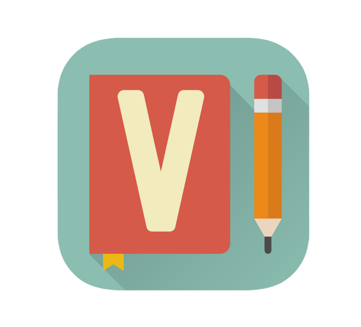Vocabulary is a well-rounded, easy-to-use app with more positive than negative features. The goal is to learn new vocabulary words, which is met as they give the users new words with reminders as often as they may prefer. The user may also scroll down and learn word after the other without dedicated study time. The UX and UI sides of the design are clearly taken into action with an easy-to-use app that is beautifully created to draw users in and keep them engaged with reminders and customization.
Vocab Junkie works and is successful, as users can learn new vocabulary words from it. However, users will not use this app for extended periods of time. The designers did create different modes and success tracking, which is enticing but failed to make it appealing to the eye and bank accounts. With $4.99 for each set, most users would feel too much friction to continue and just move on to another app. Vocab Junkie only scratches the surface of UX design and lacks UI design throughout. Desirability is missing, and there are not many thoughts or feelings that arise as users accomplish their goals.
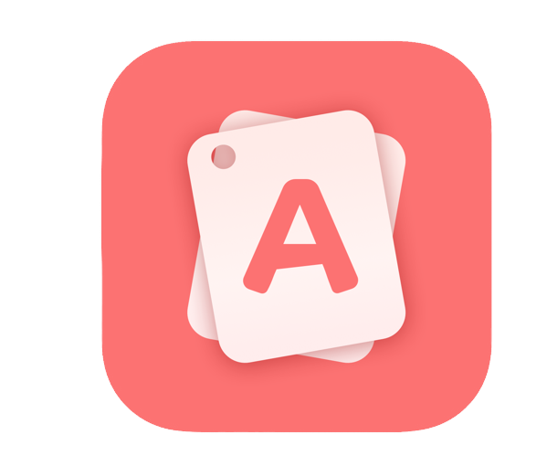Atlas English is a very successful product. It meets the user's goals and keeps them engaged by offering more levels of vocabulary knowledge. The designers were able to take the users' needs and find an easy-to-use solution that users could use for an extended period of time. This app exceeds the goals of user experience and user interface design, as it is useful, usable, and desirable. The users' learning is proven by passing each quiz, test, and exam, which encourages users to continue using the app and expanding their vocabulary.
01.02 User Research
I conducted in-person user interviews with five potential users to build a primary persona and inform the design.
Doing
- "I try to use all my resources when learning."
- "I learn best by myself with repetition."
- "I need to know the word and what it means first and then apply it."
- "I try to use the apps consecutively, but I get very distracted easily."
- "I learn best with a teacher and slowly working through a workbook."
- "I want to expand my vocabulary in a convenient way that is accessible to me anytime."
- "I believe that if my mom and I would use the same vocabulary app and I could see how many times she has used her new words in a week and she could see mine, then that would create a sense of competition and encourage me to continue using the app."
- "I believe that if there is some sort of fun aspect at the end of all the work, that would keep me motivated to continue."
- "I think a good way would be seeing a new word each day and then building from the previous days as you move through that week."
- "I believe I would also think about it more if it was social and you could use it with your friends."
- "I feel like a lot of apps do a good job of gamifying, but for me, if I can see my strengths and weaknesses and could target my weaknesses, then I would be more likely to continue using the app."
- "I personally feel like I have a hard time with words."
- "I feel like a lot of apps lack in showing progress."
- "I feel like I am more engaged if there are building blocks that slowly get harder."
02 - DEFINE
I will analyze and organize the insights from my research to create a persona to define the problem statement and hypothesis.
02.01 Persona
I created a persona based on user interviews to better understand our users' goals, needs, experiences, and behaviors.
Anna Thompson “I am driven and capable but need an app that will encourage me and help me retain new vocabulary.”

- 29 years old
- Living in California
- Currently working as a social media coordinator
- Bachelor of Arts
- Photography fanatic
Behaviors
- Engaged in social media throughout the day for work and personal life.
- Often the first point of contact with new potential clients.
- Visual learner.
- Talented photographer.
Needs/Pain Points/Goals
- Needs to primarily increase her vocabulary for better storytelling while in her role.
- Needs to stick to a vocabulary app long enough to retain newly acquired vocabulary words.
- Frustrated with the lack of retention she is currently getting from her current apps.
- Her goal is to expand her vocabulary to improve her career and become a senior content creator.
User Stories
- As Anna, a social media coordinator, I want to grow my vocabulary so that I can reach more users via storytelling.
- As Anna, an individual who learns best by repetition, I want to learn one word per day so that I can repeat, retain, and be able to use those new words.
- As Anna, often the first point of contact for our company, I want to expand my vocabulary so that I can present myself better to new clients.
- As Anna, a social media coordinator, I want to sharpen my writing skills with new vocabulary so that I may reach my professional goals.
- As Anna, a goal-driven professional, I want to be reminded of my goals so that I am encouraged to continue.
Job Stories
- When writing new social media posts, I want to have access to a broader vocabulary so I can convey better stories.
- When meeting new clients, I want to use my newly developed vocabulary so I can present myself more professionally.
- As I learn new vocabulary, I will feel more confident, so I can ask for more challenges.
- When in photoshoots, I want to have the right words so I can translate the exact emotions conveyed by the photographs.
Problem statement
Anna needs a way to expand her vocabulary, retain it and stay motivated because she wants to feel more confident when speaking to new clients and needs to improve the storytelling aspect of her job so that she can continue to grow in her career path. We will know this to be true when we see Anna's development within the app and, as a result, in her career.Hypothesis Statement
We believe that by creating an app that teaches words in context, builds on learned vocabulary, gages growth, and connects users for Anna, we will see an increase in Anna's vocabulary as well as confidence leading to professional and personal development.03 - IDEATE
I will begin conceptualizing how to organize content and present information to users to solve the problem.
03.01 Information Architecture
Task 1
- Task: Getting started using the app.
- Entry point: App home page.
- Success Criteria: The user is able to begin using the app.
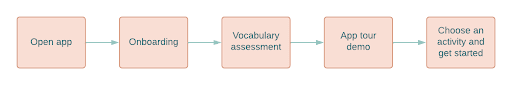
User Flow 1
- User goal: Getting started using the app.
Task 2
- Task: Add a new word.
- Entry point: App home page.
- Success Criteria: The user adds a specific word to learn.
- User goal: Add a specific word to learn.
Task 3
- Task: Connect with friends.
- Entry point: App home page.
- Success Criteria: The user adds a friend and can see their progress in the app.
- User goal: Add a friend and see their progress in the app.
Task 4
- Task: Set reminders.
- Entry point: App home page.
- Success Criteria: The user sets a reminder to practice new vocabulary.
- User goal: Add a daily reminder to practice new vocabulary.
04 - PROTOTYPE
I will build a more physical system around our user flows by creating effective wireframes and a prototype that supports our user goals.
04.01 Wireframes
Onboarding
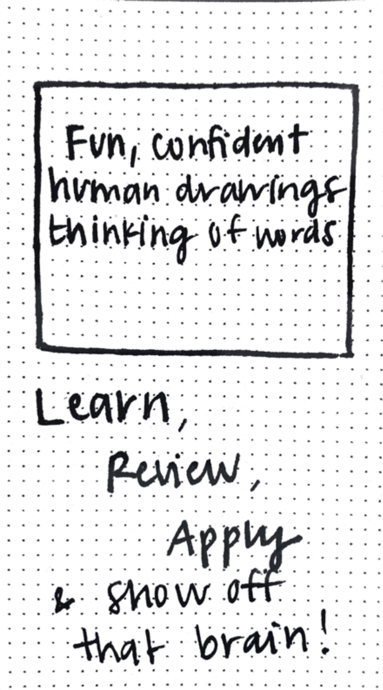
Splash screen: I have chosen to use an in-app guide for onboarding. This showcases key workflows that make my solution valuable and useful for driving full product adoption.
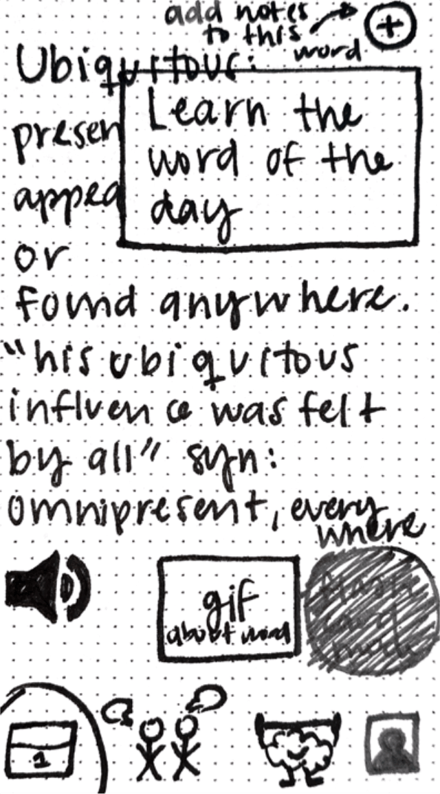
Word of the Day: Users will be able to see the definition of the word of the day, the word in context, synonyms, hear the pronunciation, and a related gif. Research demonstrated that users learned words better when they were shown more options than just a definition.
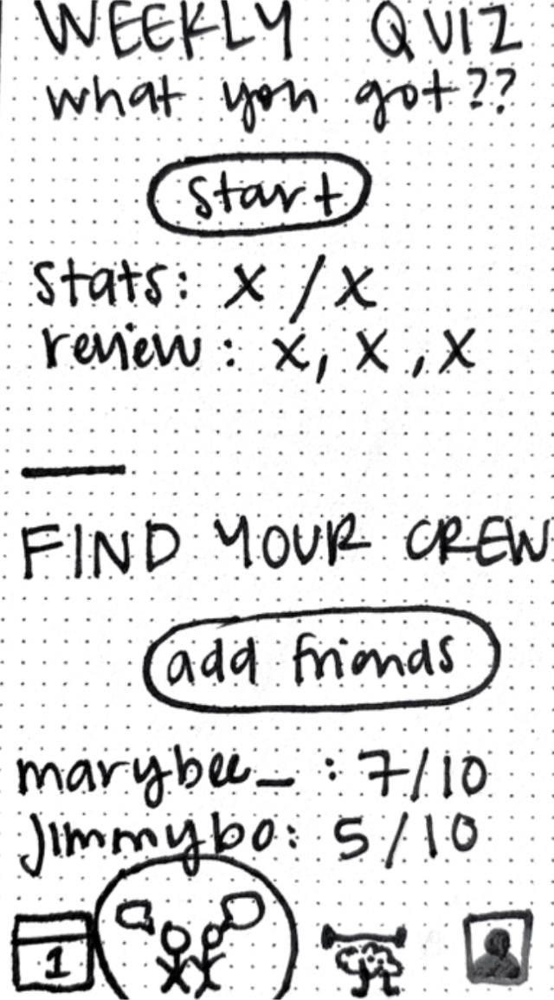
Weekly Quiz & Find Your Crew: I included a social aspect to the app to increase retention. Research shows that users are more likely to use an app if there is a way to compete with their friends. Here they can add friends and compare their scores each week they take the weekly quiz.
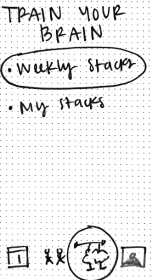
Train Your Brain: This screen will allow users to add more words they want to learn, organize words into stacks and see previous weekly stacks. This will be key for users to learn not only more vocabulary but master words they want to use on a regular basis.
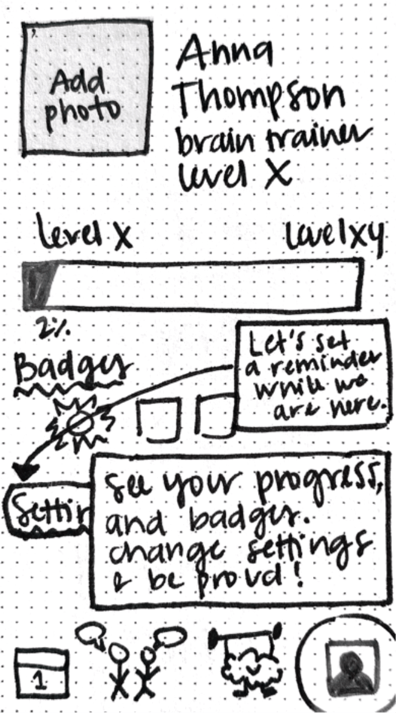
My Account: Research shows users are more likely to continue using an app if they are seeing growth and are encouraged to continue. For that reason, I added levels users could grow from and to and see how far along they have left. I also added badges to continuously encourage users to meet certain goals.
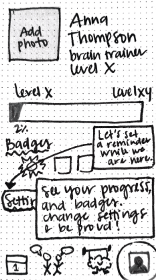
Set notifications: Research showed users want to be notified to remember to use an app, so I made sure to include setting notifications as a part of the onboarding process.
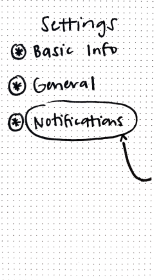
Notification Settings: Based on research, I knew that although users want notifications, they want them to be extremely customizable so that they are helpful instead of bothersome. Therefore, we included several criteria for the notifications users would like to see.
Register
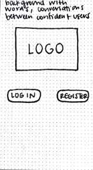
Intro screen. Log in or register.
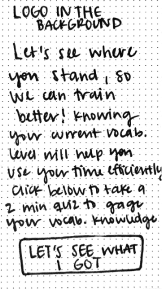
User intro for 2-minute vocabulary quiz: I added a vocabulary quiz to gauge our users’ current vocabulary before learning on the app. This is helpful so that users are placed on a level that is not too easy or difficult but engaging and helpful. I also made sure to explain why a quiz in order to reduce any points of friction.
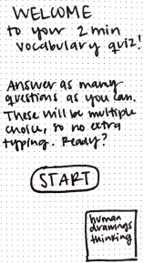
Instructions for the 2-minute vocabulary quiz: I added instructions to ensure users knew what to expect during the quiz.
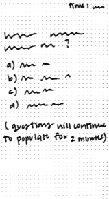
Quiz: Here is an example of the layout of a quiz question.
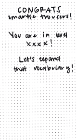
Congratulations Screen: I added a congratulations screen to showcase the users' vocabulary level in a way that evokes encouragement.
Adding a custom word and a new stack
Train Your Brain Screen: Users will be able to add new stacks or new words through this screen. Research showed users want the ability to add their own words to learn.
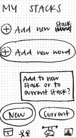
My stacks: Users can add a new word to a new stack of words or a current stack of words. Giving users options for organization will help users access the right words faster, leading to more time to learn.
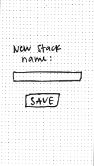
Add New Stack: Users can choose their own name for a stack of words giving them the freedom to title it however they will remember it best.
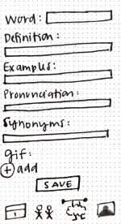
Add New Word: I gave users the same spots to fill out as the ones in the word of the day, this will allow users to fill out the context for the word, increasing their retention of the word.
Add a Friend
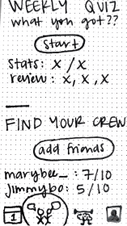
Weekly Quiz and Connect with Friends Screen: This screen allows users to take the weekly quiz, see their stats, add friends and compare stats. Research showed the need of a social aspect in the app for users to be eager to use the app. Including quizzes with friends will encourage users to learn more words to be prepared for the weekly quiz to compete with their friends leading to an increase of usage and retainment.
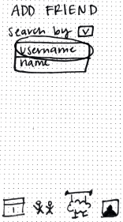
Search for Friends: Users will be able to search for friends using several methods like username or name.
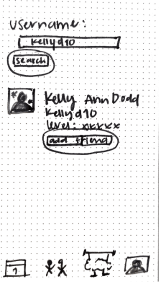
Found Friend: Once they find the friend they are looking for, they can simply add them with the click of a button.
Review Vocabulary
Train Your Brain Screen: On this screen, users can access their vocabulary stacks and review their words.
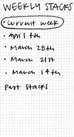
Weekly Stacks: A list of the most recent stacks will appear with the option to see more.
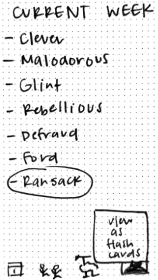
Current Week: After selecting a stack, the user can click to view each word to review it.
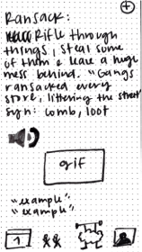
Review Word: Here, the user will be able to review the word with as much context as possible. Research showed that context would help users understand the word better, making the word easier to learn.
Review Vocabulary as Flashcards
Train Your Brain Screen: Like in the previous flow, users will have their choice of stacks here.
Weekly Stacks: The most recent weeks will be showcased with the option to see past weeks.
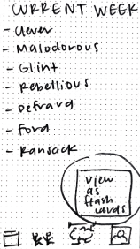
View as Flashcards: Users can also choose to review words as flashcards. Research shows that a majority of users choose flashcards as their primary method for memorizing.
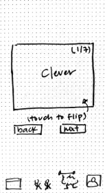
Flashcard Example Front: The flash card will have a count of the words in that stack, so the users know their proximity to the end. Users will also be also to skip a word or go back to a word and simply tap to see the word's definition.
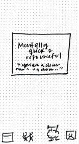
Flashcard Example Back: The back of the flashcard shows a quick definition and a sentence using the word. Flashcards are meant to be a quick way to learn, which is why I refrained from adding more information to the back of it.
Mid-fidelity Prototype
05 - TEST
I will test our prototype on users to evaluate its usefulness. Usability testing will allow me to see how real people interact with it to determine whether it serves its intended purpose.
Usability Test Plan
- Scope: Testing “Learn like you Train” vocabulary app.
- Schedule: I will meet with the test participants the week of April 25th at their homes.
- Sessions: 10-minute sessions with four participants.
- Equipment: I will use an iPhone 11 to test the app and take notes of the findings.
- 0 = I don't agree that this is a usability problem at all
- 1 = Cosmetic problem only: need not be fixed unless extra time is available on the project
- 2 = Minor usability problem: fixing this should be given low priority
- 3 = Major usability problem: important to fix, so should be given high priority
- 4 = Usability catastrophe: imperative to fix this before the product can be released
Usability Test Script
Hi, ______. My name is Andrea Nunley, and I will walk you through this session today. I am conducting usability tests to better evaluate how well my prototype empowers people to learn new vocabulary. The session should take approximately 10 - 15 minutes. This is not a test. You can’t do or say anything wrong here. You will be testing an incomplete prototype that likely has errors and mistakes - that’s why we’re testing it out! As you use the prototype, I will ask you as much as possible to think aloud: to say what you’re looking at, what you’re trying to do, and what you’re thinking. If you have any questions as we go along, ask them. I may not be able to answer them right away since we’re interested in how people do when they don’t have someone sitting next to them to help, but I will answer any non-prototype flow-related questions. All right, let's do this!
Usability Test Script Tasks
Direct Tasks
- Register and begin using the app.
- Add a note to the word of the day.
- Add a friend.
- Add a new stack and a new word.
- Review a weekly stack as flashcards.
Scenario Tasks
- You want to learn more vocabulary and download our app “Learn like you Train.” Create an account to start using the app.
- You are looking around the app and come across the word of the day. You remember a person when you read the definition. Add that note to the word of the day.
- You are enjoying the app and want to try to beat your friends in the weekly quizzes. You ask one of your friends to download and create an account so you can add them as a friend in the app. Add your friend to the app.
- You remember a word you don't know the meaning of but want to learn and remember it. Add a new stack for words you are unsure about in books and add the new word to it.
- You want to practice the words of the week to improve your quiz score. Review this week's stack as flashcards.
Usability Test Report
| Task | Observation | Severity | Recommendation |
|---|---|---|---|
| 1 | Onboarding makes it difficult to find where to register. Users are confused and skip onboarding to reach the task. | 3 | Move onboarding to after the user creates an account. Add a welcome to the app’s tutorial screen and a welcome to the app screen after onboarding and adding a notification. |
| 1 | The user feels there are too many words before the quiz. | 2 | Reduce the number of words before the quiz. |
| 2 | Some users knew where to go but some did not. | 3 | Adding “today” to the calendar's icon is key for users to know that is where the word of the day is. Adding the word “note” so it would be easier to remember where to add a note. |
| 3 | Very easy to find your friends and explanatory. Icon is very helpful. | -- | -- |
| 4 | Not currently able to click a current stack to add a word. | 4 | Add hotspot to be able to add a word to a current stack. |
| 4 | Adding a word should be the easiest thing to do. | 3 | Add a new icon to add a word from anywhere. |
| 5 | Weekly stacks vs My stacks is confusing. | 2 | Change stacks system. |
| 5 | It was not self-explanatory to tap to flip the flashcard for any of the users. | 3 | Add a note to the flashcards to tap to flip. |
| 5 | All stacks seems like a very busy screen. | 2 | Reduce the number of stacks shown on the first screen. |
Task 1 Revisions
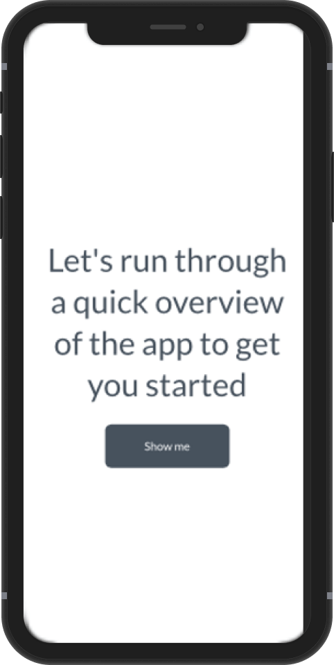
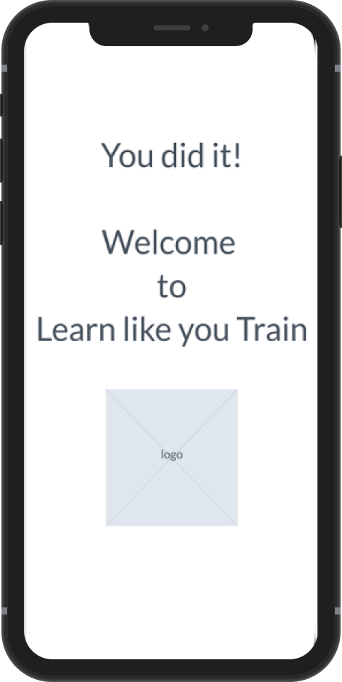
Added a welcome to the app screen after onboarding and setting the first notification.
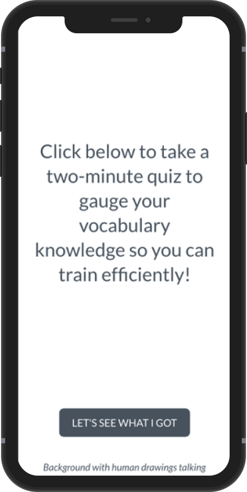
Reduced the wording before the vocabulary quiz.
Task 2 Revisions
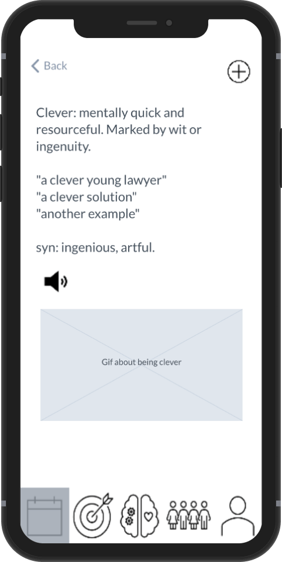
Added “today” to the calendar's icon for users to easily know where the word of the day is.
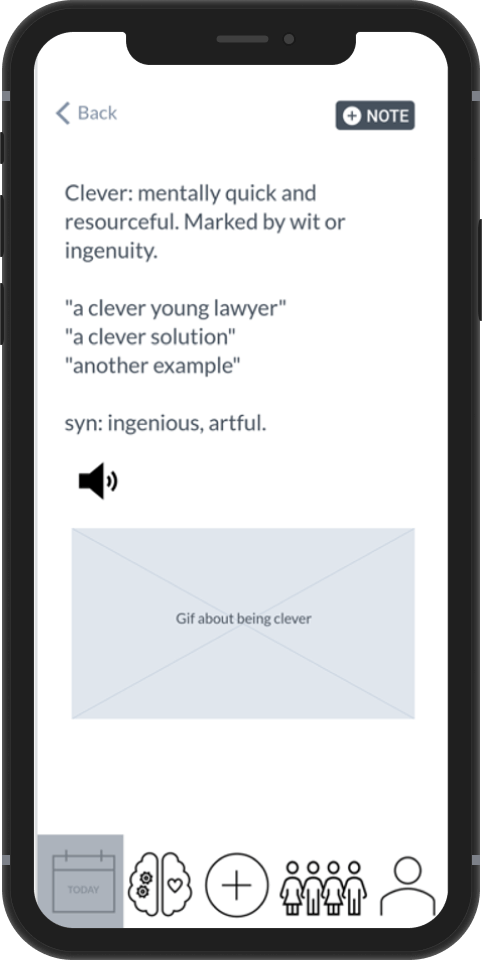
Added the word “note” so it would be easier to remember where to add a note for the users.
Task 4 Revisions
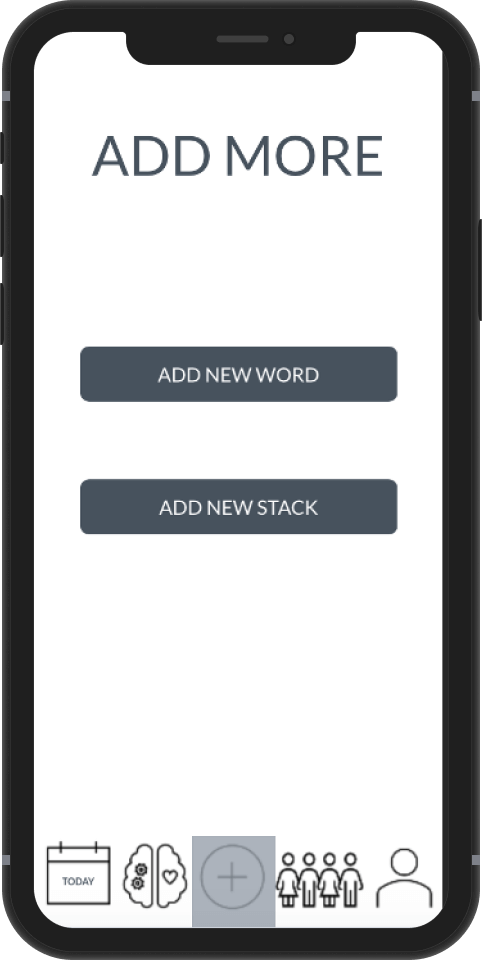
Added a new menu icon throughout the whole app to have the ability to add a word from anywhere, and moved the quiz of the week to under the "Train Your Brain" screen to create space for the new menu icon to add words and stacks more efficiently and quicker.
Task 5 Revisions
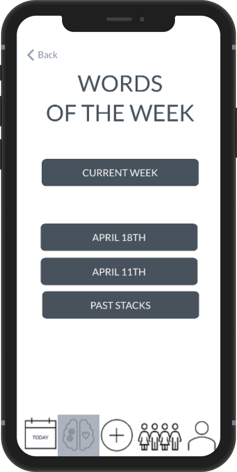
Changed the stacks system and reduced the number of stacks shown on the first screen of stacks.
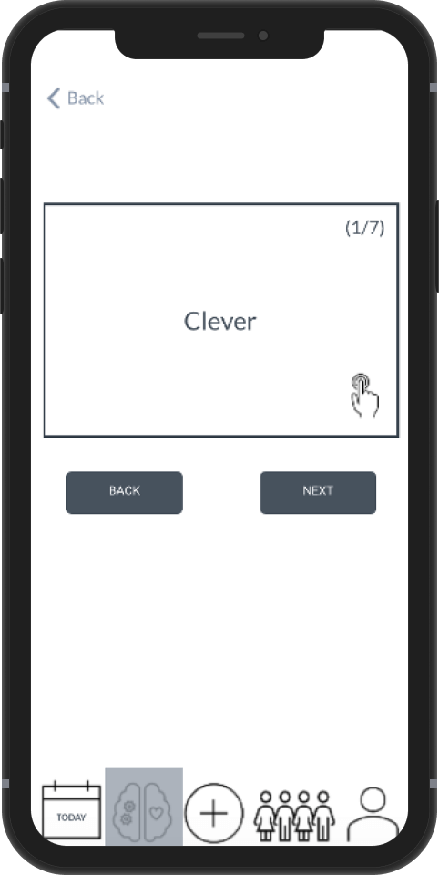
Added an icon to the front of the flashcards for users to know to tap to flip.
NEXT STEPS
Through the user-centered designing of this vocabulary application, I was able to define our user, their goals, and pain points and design and test a solution to their need.
01 User Interface Design
The first next step is to develop an interface design. I will begin with researching colors to evoke the right emotions and begin developing a design system to implement as I design a high-definition prototype.
02 Engagement Improvements
I plan to increase the rewarding aspects of the app to increase user engagement and retention. I will do this by implementing a share-with-friends component after each weekly quiz where users can share their accomplishments directly to social media to showcase their score and invite others to join. I will also increase the number of badges users can achieve to keep users engaged while using the app.
03 User Testing
I will test each decision and prototype during and after each design decision and new iteration to confirm alignment with the user goals.